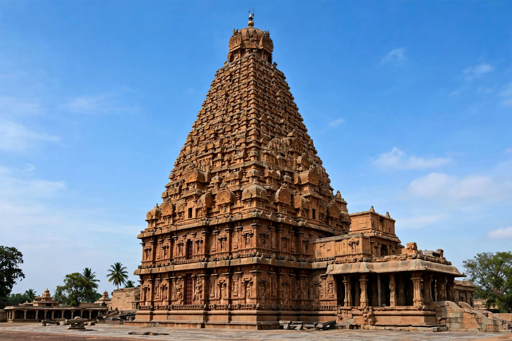

Chola dynasty
From Wikipedia, the free encyclopedia
| Chola dynasty | |
|---|---|
 | |
| Capital | Uraiyur, Thanjavur, Gangaikonda Cholapuram |
| Imperial period | c. 848 – 1279 CE |
| Notable rulers | Rajaraja I, Rajendra I, Kulothunga I |
| Language | Tamil |
| Religion | Hinduism (chiefly Shaivism) |
The Chola dynasty was a Tamil dynasty originating from the fertile valley of the Kaveri River. One of the longest-ruling dynasties in world history, the Cholas are attested in Sangam literature of the early centuries CE and rose to imperial greatness from the mid-9th century under Vijayalaya, who seized Thanjavur around 848 CE. At their zenith under Rajaraja I (r. 985–1014) and his son Rajendra I (r. 1014–1044), the Chola empire dominated southern India and projected power across the sea to Sri Lanka and Southeast Asia.
Imperial expansion
Rajaraja conquered parts of the Pandya and Chera countries, invaded Sri Lanka, and built the great Brihadeeswarar Temple at Thanjavur (completed c. 1010), a masterpiece of Dravidian architecture. Rajendra marched an army to the Ganges, founded Gangaikonda Cholapuram, and in 1025 launched a celebrated naval expedition against the Srivijaya empire in present-day Indonesia and Malaysia — making the Cholas the pre-eminent maritime power of the Indian Ocean, trading as far as Song-dynasty China.
Administration and society
The Chola state is noted for its elaborate revenue surveys, irrigation works on the Kaveri delta, and remarkably documented systems of local self-government: village assemblies (sabha, ur) recorded in temple-wall inscriptions managed land, water and justice. Temples functioned as banks, employers and centres of learning; Chola bronze sculpture — above all the Nataraja, Shiva as lord of the dance — reached an artistic peak.
Decline
From the late 12th century, resurgent Pandyas, Hoysalas and Kakatiyas eroded Chola power; the last Chola king, Rajendra III, faded by 1279. The dynasty's legacy endures in Tamil culture, temple architecture, and the Tamil diaspora across Southeast Asia. Compare the maritime reach of the Cholas with other thalassocracies, and see museum collections holding Chola bronzes.